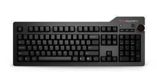

ブログ一覧（更新順）
The Verge https://www.theverge.com
The Verge is about technology and how it makes us feel. Founded in 2011, we offer our audience everything from breaking news to reviews to award-winning features and investigations, on our site, in vi...
2時間前
ギズモード・ジャパン https://www.gizmodo.jp
日本最大のテクノロジー＆ガジェット専門メディア。YouTubeや記事を通じて、最新ガジェットの偏愛レビューから、AI／サイエンスの深掘りコンテンツまで幅広く発信しています。「みんなで探求する」を合言葉に、刺激的な未来の体験をシェアします。
2時間前
デイリーガジェット https://daily-gadget.net/
デイリーガジェットは、スマホや海外発のユニークなガジェット、クラウドファンディングの注目アイテムまで幅広くレビュー。生活をもっと楽しく快適にする視点で、日常に驚きと便利さを届けるガジェット情報メディアです。
4時間前
Aviation Wire https://www.aviationwire.jp
航空経済紙「Aviation Wire」は、航空機やエアライン、空港、官公庁に関する情報や各種統計などをお届けして参ります。
4時間前
ガジェットブログ ルイログ https://rui-log.com
ガジェットレビューブログです。デスク周りを快適にするアイテムやApple製品（MacBook・iPad・iPhone・Apple Watch）等のガジェット及び周辺機器、便利なモノやアプリ（ソフト）についても紹介しています。
7時間前

TRAICY（トライシー） https://www.traicy.com/
TRAICY（トライシー）は、航空・LCC・鉄道・ホテル・ゲストハウス・バックパッカーズの最新情報を発信している、日本最大級のトラベルメディアです。
8時間前
Happy Mi Life （ハッピーマイライフ） https://www.happy-mi-life.net
人生を楽しく過ごすために、ポジティブに生きて行きたい！マイルを貯めて、大好きなゴルフをして、ハワイに行って、やりたいことがいっぱい！ このブログでは、ポジティブに生きて行くために自分の趣味をはじめ『ハッピー』と思うことを色々アップしていきます。
9時間前
TALPKEYBOARD BLOG https://www.talpkeyboard.com/
TALPKEYBOARDは、2017年に開業したメカニカルキーボードパーツ専門ショップです。 このブログでは、パーツレビュー・製品比較・技術考察などを中心に、キーボードを楽しむための情報を発信しています。 一部の記事にはアフィリエイトリンクが含まれます。
11時間前

AIRLINE web -月刊エアライン×航空旅行- https://airline.ikaros.jp
飛行機の運航を支える最前線、魅力あふれる空の旅のサービス、飛ぶためのテクノロジーやエアライン・空港の最新ビジネス動向、飛来機の撮影＆投稿など趣味として楽しむ航空の世界まで幅広く情報をお届けします。
13時間前

陸マイラー ピピノブのANAのマイルで旅ブログ https://www.pipinobu.com
陸マイラーのピピノブが、飛行機に乗らずに貯めたマイルで世界中を旅するブログです。大量マイルの貯め方から、旅行記、ホテル宿泊記などをお届けしています。
21時間前
トラベルボイス https://www.travelvoice.jp
観光産業の最新情報やトレンドを伝える、読者数No.1の専門ニュースメディア。厳選ニュースのほか、分析データや識者によるわかりやすい解説コラム記事も満載。その日のニュースをコンパクトにまとめたメールマガジンも好評。
1日前

理系マイラーとSFC修行 https://rikei-miler.com
理系の夫と文系の妻が運営する陸マイラーブログ。年間100万マイルを実現した方法から、マイルを使った旅行記や宿泊記まで、マイル・旅行・ホテルに関する様々なお得情報をお届けします。
2日前

マイルの錬金術師アドバンス https://haruwari.com
陸マイラーをはじめて累計で1,700万マイル以上のポイントを貯めてきました。ブログでは旅行の体験を中心に発信しています。マイルの貯め方・使い方は体系的にお伝えできるように無料のメール講座を用意しています。初心者から中級者くらいまでの方にお役に立てる内容にしていますので合わせてご確認いただけると幸いです。
3日前
ゆみみの旅ブログ https://yumimiblog.com
これから旅行に行きたいと思っている方や実際の旅行の様子を知りたい方に向けて 旅行情報・レビューなどを発信しています。現地の写真を多数掲載し、アドバイスや失敗談などを読みやすく紹介しています。皆さまの旅行がより良きものとなるよう、後押しさせていただきます。
3日前
クレカで妄想トラベル https://www.tokutakublog.com
本ブログ「クレカで妄想トラベル」は、マリオットボンヴォイアメックスカードを最大限に活用するための特化サイトです。豪華なホテル滞在、ポイントの効率的な使い方、特典の最適化、さらには地域ごとのおすすめホテルまで、賢い旅行計画と快適な滞在のための実用的なヒントとアドバイスを幅広く提供します。
5日前
デジスタ https://digital-style.jp
NewPost ガジェット 最新おすすめガジェットまとめ 殿堂入りの買ってよかったものまとめ PCデスク周りの便利グッズまとめ おすすめのKindle端末まとめ 紛失防止タグおすすめランキング オーラリング3レビュー&a ...
5日前
自作キーボード温泉街の歩き方 https://salicylic-acid3.hatenablog.com/
自作キーボードの世界は温泉に例えられます。自作キーボードの温泉街の楽しい歩き方を紹介します。
7日前

レスポンス - 航空 https://response.jp/category/airplane/
自動車業界に張り巡らされたニュースネットワーク。新型車やモーターショーの速報や試乗記。電気自動車（EV）やプラグインハイブリッドなどエコカーの最新情報や分析コラムなど。毎日約120回更新。“いま”のクルマにレスポンス！
13日前
ENOHARU HOTEL REPORTS https://enoharus-hotel-reports.com
「ホテルをもっと手軽にもっと楽しむ」をテーマに、高級ホテル・ラグジュアリーホテルをはじめ、実際に宿泊した国内や海外のホテルの宿泊レポート情報や、よりお得に旅行・宿泊するためのクレジットカード情報をお届けするブログ！
24日前
AMEXとANAマイル https://www.sk-free-journal.com
マイルとポイ活をして旅をもっと格安にラグジュアリーにする方法をご紹介。誰でも簡単にマイルを貯めるための方法を解説。
1ヶ月前
Mechanical Keyboard Blog by Kinetic Labs https://kineticlabs.com/blog
The latest guides, tutorials, and resources to learn how to get started with custom mechanical keyboards. Learn build guides and tutorials from community experts.
1ヶ月前

Das Keyboard Blog https://www.daskeyboard.com/blog/
Learn about keyboards, typing productivity, and efficiency from the Das Keyboard team.
4ヶ月前
JGCゆる陸マイラーの旅行備忘録 https://travelervega.hatenablog.com/
数年後の家族でのRTW世界一周旅行を目指しているJGCゆる陸マイラーの旅行備忘録です。2024年は皆既日食を体験します。
7ヶ月前